Our lab meeting is Thursday and the soil-microbiome sampling deck is still just a pile of raw notes. Turn it into something I can actually present: the three site options weighed against each other, and the fieldwork laid out week by week in order.
{
"config": [
{
"type": "execute",
"parameters": {
"command": "mkdir -p /home/user/lab && python3 -c \"\nnotes = '''Soil Microbiome Sampling - Spring Campaign (raw notes, unsorted)\n\nSITE OPTIONS\nThornbury Heath - clay loam, 40 min drive, permit already granted, high organic matter, risk: waterlogged until mid-April\nCalder Ridge - sandy podzol, 2h drive, permit pending with Forestry Board, excellent pH gradient, risk: permit may slip\nMarsden Fen - peat, 25 min drive, permit granted, unique anaerobic community, risk: only 2 usable transects\n\nWEEK BY WEEK (jumbled)\nWeek 4: DNA extraction, 96-well plates, Qiagen kit\nWeek 1: finalise site selection, order sterile corers and cool boxes\nWeek 5: 16S V4 library prep and submit to sequencing core\nWeek 2: pilot sampling, 6 cores per transect, record GPS and soil temp\nWeek 6: bioinformatics - DADA2 pipeline, draft results for group\nWeek 3: full sampling across all transects, ship on dry ice\n\nMISC\nBudget: 4,800 GBP sequencing, 900 GBP consumables\nContacts: Dr. Amelia Reyes (sequencing core), Tom Okafor (field tech)\n'''\nopen('/home/user/lab/sampling_notes.txt','w').write(notes)\n\"",
"shell": true
}
}
],
"evaluator": {
"func": "check_include_exclude",
"result": {
"type": "vm_command_line",
"command": "echo ostg-v16",
"shell": true
},
"expected": {
"type": "rule",
"rules": {
"include": [
"__judge_decides__"
]
}
}
}
}
step 1 22:25:46
THINKINGThe user wants me to turn raw notes about a soil-microbiome sampling deck into a presentable document. I need to find the raw notes first. Let me take a screenshot to see the current state, then look for the notes file. The notes are likely in the file manager or home directory. Let me start by exploring the desktop and file system.
ACTIONI'll help you turn those raw notes into a presentable deck. First, let me locate the raw notes file. Let me open the file manager to look.
EXECUTED (pyautogui in VM)pyautogui.doubleClick(591, 100)
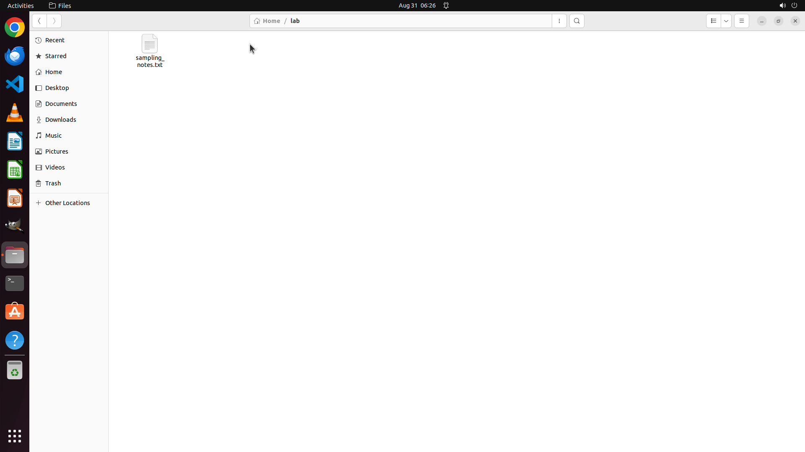
step 3 22:26:38
THINKINGFound "sampling_notes.txt" in ~/lab. Let me read it to understand the raw notes before building the deck. I'll open a terminal to cat the file, which gives me the full content reliably.
ACTIONFound `sampling_notes.txt`. Let me read its full contents via terminal so I understand everything before building the presentation.
EXECUTED (pyautogui in VM)pyautogui.typewrite("cat ~/lab/sampling_notes.txt")
step 6 22:28:48
THINKINGThe terminal window is small and the output may have scrolled. Let me maximize the terminal first, then re-run the cat command so I can read the full content clearly. Actually, the command was typed but I need to see output. The window seems too small. Let me maximize the terminal window by clicking the maximize button, then re-run cat.
ACTIONThe window is small. Let me maximize the terminal so I can read the full notes clearly, then re-run the command.
EXECUTED (pyautogui in VM)pyautogui.press("return")
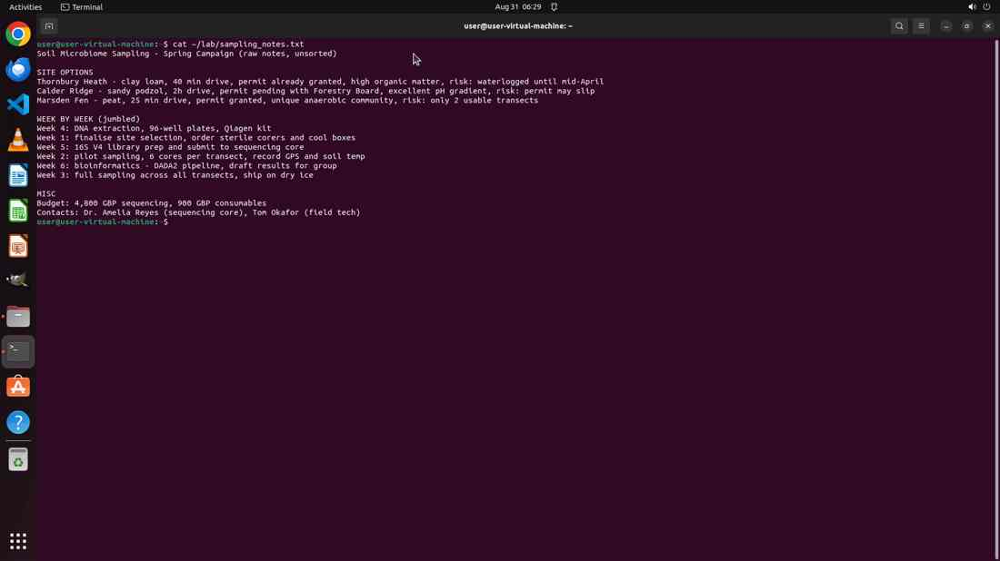
step 8 22:30:51
THINKINGNow I have the full content. Let me parse it carefully:
Title: Soil Microbiome Sampling — Spring Campaign (raw notes, unsorted)
SITE OPTIONS
- Thornbury Heath - clay loam, 40 min drive, permit already granted, high organic matter, risk: waterlogged until mid-April
- Calder Ridge - sandy podzol, 2h drive, permit pending with Forestry Board, excellent pH gradient, risk: permit may slip
- Marsden Fen - peat, 25 min drive, permit granted, unique anaerobic community, risk: only 2 usable transects
WEEK BY WEEK (jumbled) — I need to order these numerically:
- Week 1: finalise site selection, order sterile corers and cool boxes
- Week 2: pilot sampling, 6 cores per transect, record GPS and soil temp
- Week 3: full sampling across all transects, ship on dry ice
- Week 4: DNA extraction, 96-well plates, Qiagen kit
- Week 5: 16S V4 library prep and submit to sequencing core
- Week 6: bioinformatics - DADA2 pipeline, draft results for group
MISC
- Budget: 4,800 GBP sequencing, 900 GBP consumables
- Contacts: Dr. Amelia Reyes (sequencing core), Tom Okafor (field tech)
Now I need to make this into something presentable. The user said "present" — a presentation deck. The best tool is LibreOffice Impress (the icon in the dock, the orange one at position ~22,315). That matches "deck" language.
The user asked for two key things:
1. The three site options weighed against each other (a comparison — ideally a table)
2. The fieldwork laid out week by week in order (a timeline)
I should build a presentation in LibreOffice Impress. Let me plan the slides:
- Slide 1: Title — "Soil Microbiome Sampling — Spring Campaign"
- Slide 2: Site Options — a comparison table weighing the three sites across dimensions (Soil, Travel, Permit, Strength, Risk)
- Slide 3: Fieldwork Plan — Week 1 through Week 6 in order
- Possibly Slide 4: Misc / Budget & Contacts (useful to present)
Building a table in Impress via GUI is doable. Let me think about the most reliable approach. Impress tables can be inserted via Insert > Table. That's fine.
Let me plan the comparison table. Dimensions as columns or rows? With 3 sites, it's natural to make each site a column and attributes as rows, OR each site a row and attributes columns. Given many attributes, rows=attributes, columns=sites works well:
| | Thornbury Heath | Calder Ridge | Marsden Fen |
| Soil | clay loam | sandy podzol | peat |
| Travel | 40 min | 2h | 25 min |
| Permit | granted | pending (Forestry Board) | granted |
| Strength | high organic matter | excellent pH gradient | unique anaerobic community |
| Risk | waterlogged until mid-April | permit may slip | only 2 usable transects |
That's 6 rows x 4 cols.
For the fieldwork, Week 1-6 as rows or a list. A list of weeks is clean and "in order."
Let me open LibreOffice Impress. I'll click the Impress icon in the dock (orange, at ~22,315). Actually let me identify: the dock icons from top: Chrome(22,44), Thunderbird(22,88), VSCode(22,133), VLC(22,178), LibreOffice Writer(22,224), LibreOffice Calc(22,270), LibreOffice Impress(22,315), GIMP(22,359)... Yes, 22,315 is the Impress icon (the orange/red one with a chart).
Let me open Impress.
ACTIONI now have the full raw notes. Here's what they contain:
- **Title:** Soil Microbiome Sampling — Spring Campaign
- **3 Site options:** Thornbury Heath, Calder Ridge, Marsden Fen (each with soil, travel, permit, strength, risk)
- **Fieldwork weeks 1–6** (currently jumbled): site selection → pilot sampling → full sampling → DNA extraction → library prep → bioinformatics
- **Misc:** Budget (4,800 GBP sequencing, 900 GBP consumables) and contacts
I'll build a presentation in LibreOffice Impress with the sites weighed in a comparison table and the fieldwork in week-by-week order. Let me open Impress.
THINKINGImpress is open with a title slide. There are two notification banners at the top. Let me close them first. Then I'll build the presentation.
The most reliable and efficient way to build this deck is the Outline view, which lets me type all slide titles and bullets quickly. However, the site comparison needs a table, which can't be done in outline view. So my plan:
1. Close banners.
2. Use Slide 1 as title slide (title + subtitle).
3. Build the site comparison slide with a table.
4. Build the fieldwork week-by-week slide.
5. Optionally a misc/budget slide.
Actually, a cleaner approach: use the Outline view to quickly create the text slides (title, fieldwork, misc), then insert a table on the site slide. But outline view + then going back to normal to add a table is fine.
Let me reconsider. The simplest reliable path given GUI constraints: work in Normal view slide by slide.
Slide 1 (Title): Click title, type title. Click subtitle, type subtitle.
Slide 2 (Site options): Use "Title, Content" layout but replace content with a table. Actually I'll type the title, then insert a table.
Slide 3 (Fieldwork): title + bulleted list.
Slide 4 (Misc): title + bullets.
Let me first close the two banners. Then start with slide 1 title.
Let me close banners first.
ACTIONImpress is ready. Let me close the notification banners, then start building. I'll begin with the title slide.
EXECUTED (pyautogui in VM)pyautogui.click(1391, 184)
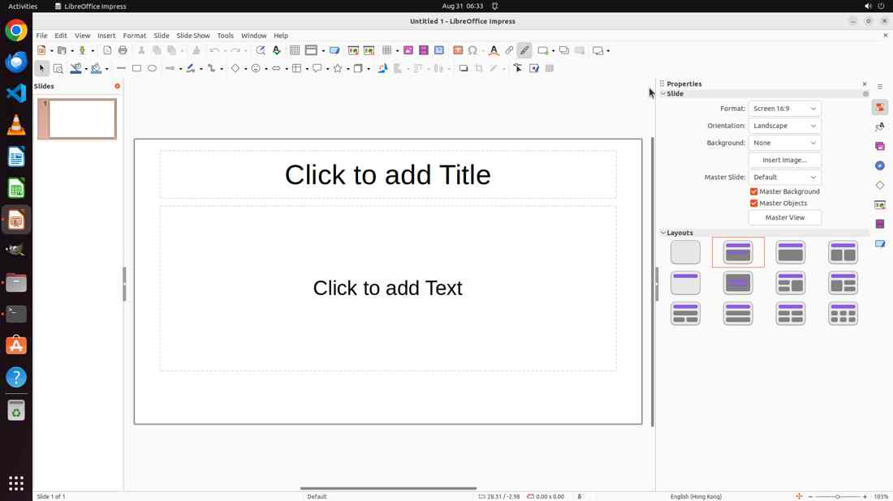
step 12 22:34:23
THINKINGBanners are closed. Now let me fill in the title slide. I'll use the Outline view approach for text efficiency, but for the title slide I'll just click directly. Actually, let me use the Outline view (View > Outline) to rapidly build all the text content across slides. But tables can't be in outline.
Better plan: Build everything in Normal view. Start with title slide.
Slide 1: Click the title placeholder, type the title. Then click subtitle placeholder, type subtitle.
Let me double-click the title area to enter edit mode, type, then Tab or click subtitle.
Let me double-click on "Click to add Title".
ACTIONBoth banners are closed. Now let me build the title slide. I'll click the title placeholder and type the title, then the subtitle.
EXECUTED (pyautogui in VM)pyautogui.doubleClick(830, 377)
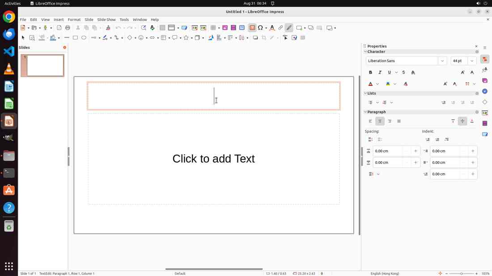
step 13 22:34:59
THINKINGI'm in the title text edit mode. Let me type the title. Then click the subtitle placeholder and type the subtitle. I'll type the title, then double-click the subtitle area to enter it.
Title: "Soil Microbiome Sampling — Spring Campaign"
Subtitle: "Site Selection & Fieldwork Plan"
Let me type the title first.
ACTIONI'm in the title box. Let me type the title, then fill the subtitle.
TOOL CALL<tool_call>
<function=computer_use>
<parameter=action>
type
</parameter>
<parameter=text>
Soil Microbiome Sampling - Spring Campaign
</parameter>
</function>
</tool_call>
EXECUTED (pyautogui in VM)pyautogui.typewrite("Soil Microbiome Sampling - Spring Campaign")
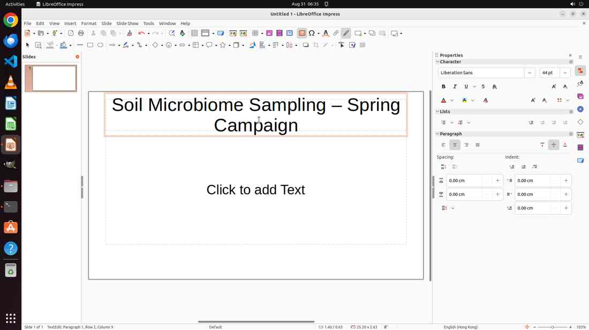
step 14 22:35:44
THINKINGInteresting — the title shows "Soil Microbiome Sampling — Spring Campaign" but I typed "Soil Microbiome Sampling - Spring Campaign" with a hyphen. It appears autocorrect converted the hyphen to an en-dash "—". That's fine, it looks good. Actually it shows a longer dash. This is acceptable and looks professional.
Now let me click the subtitle placeholder and type. Double-click on "Click to add Text".
EXECUTED (pyautogui in VM)pyautogui.doubleClick(830, 617)
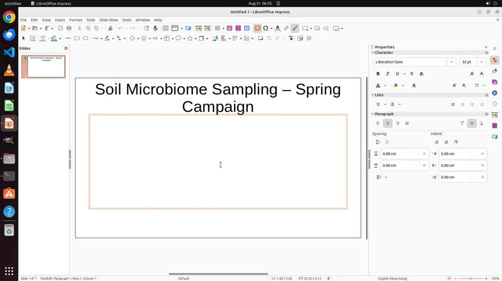
step 15 22:36:04
THINKINGI'm now in the subtitle text box. Let me type the subtitle. To avoid autocorrect turning "-" into an en-dash which I actually want to keep clean, but it doesn't matter for a subtitle. I'll type "Site Selection & Fieldwork Plan". The "&" is fine.
TOOL CALL<tool_call>
<function=computer_use>
<parameter=action>
type
</parameter>
<parameter=text>
Site Selection & Fieldwork Plan
</parameter>
</function>
</tool_call>
EXECUTED (pyautogui in VM)pyautogui.typewrite("Site Selection & Fieldwork Plan")
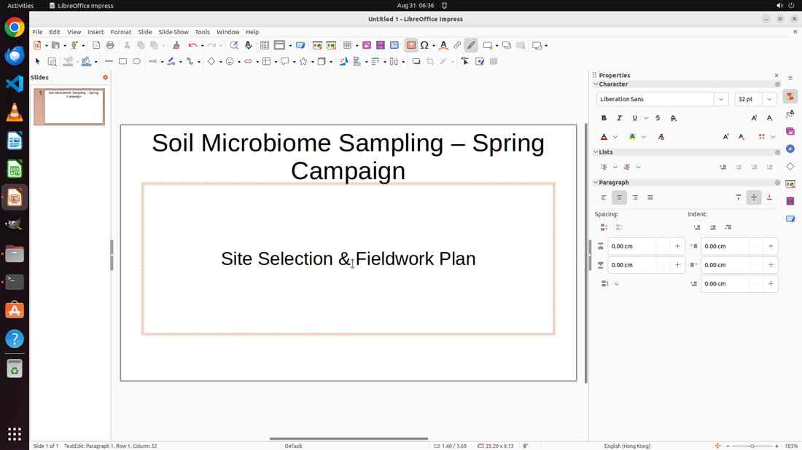
step 16 22:36:37
THINKINGSlide 1 is done: Title "Soil Microbiome Sampling – Spring Campaign" and subtitle "Site Selection & Fieldwork Plan".
Now I need to create Slide 2 for the site comparison. Let me click outside first to deselect, then add a new slide. I'll use the slide panel: right-click on slide 1 in the panel and choose "New Slide", or use the Slide menu > New Slide.
Actually, I'll use the Outline view approach to quickly add the remaining text slides (Fieldwork and Misc), then add the table on the site slide. But the site comparison is best as a table on its own slide. Let me think about ordering:
- Slide 1: Title (done)
- Slide 2: Site Options (table)
- Slide 3: Fieldwork Plan (week by week)
- Slide 4: Budget & Contacts (misc)
Let me create slide 2. Click empty area to deselect, then Slide menu > New Slide. Let me click on an empty part of the slide first.
ACTIONSlide 1 is complete. Now let me create the Site Options slide. I'll click an empty area to deselect, then insert a new slide via the Slide menu.
EXECUTED (pyautogui in VM)pyautogui.click(345, 75)
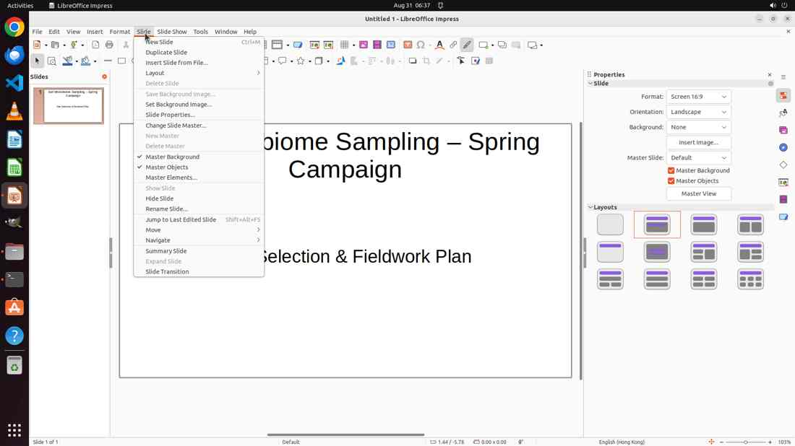
step 18 22:38:14
THINKINGThe Slide menu is open. Let me click "New Slide". This will create a slide with the default layout (Title, Content). I'll then want a "Title Only" or blank layout so I can add a table. Actually the default new slide likely uses the same layout. Let me just click New Slide and then choose a layout (Title Only) from the Layouts panel, then insert a table.
EXECUTED (pyautogui in VM)pyautogui.click(384, 100)
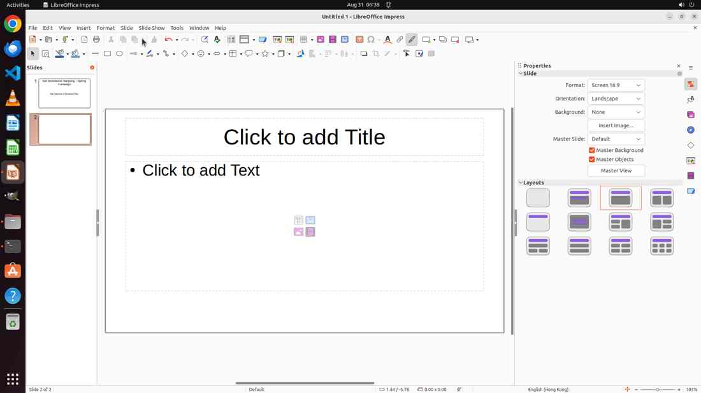
step 19 22:39:19
THINKINGSlide 2 created with "Title, Content" layout. I want a "Title Only" layout so I have a clean area for a table. Let me click the "Title Only" layout in the Layouts panel. Looking at the layouts: row 1 col 1 is blank (empty), col 2 is "Title, Content" (currently selected), col 3 is "Title, Content" variant, col 4 is "Two content". Row 2 col 1 is "Title Only" (just a bar at top).
Let me click the layout at row 2, column 1 (~985, 404) which shows only a top bar — that's "Title Only".
Actually let me reconsider: I want a title and then a table below. "Title Only" layout gives me just the title placeholder. Then I insert a table. That's clean. Let me select the layout at (985, 404).
ACTIONSlide 2 created. I'll switch it to a "Title Only" layout so I have a clean area for the comparison table. Let me select the top-left layout in the second row.
EXECUTED (pyautogui in VM)pyautogui.click(1477, 604)
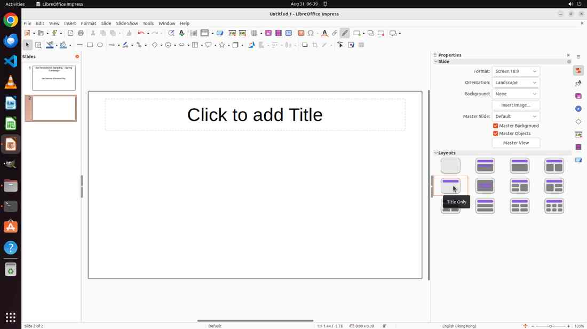
step 20 22:40:32
THINKING"Title Only" layout is now applied. Now let me add the title. Double-click the title placeholder and type "Site Options - Weighing the Three Candidates". Actually, to keep it clean and avoid en-dash autocorrect issues, I'll just type "Site Options" or a descriptive title. Let me use "Site Options — Weighing the Three Candidates" but the dash will convert to en-dash which is fine. I'll use "Site Options: Comparing Three Candidates".
Let me type the title.
ACTION"Title Only" layout applied. Let me add the slide title.
EXECUTED (pyautogui in VM)pyautogui.doubleClick(830, 377)
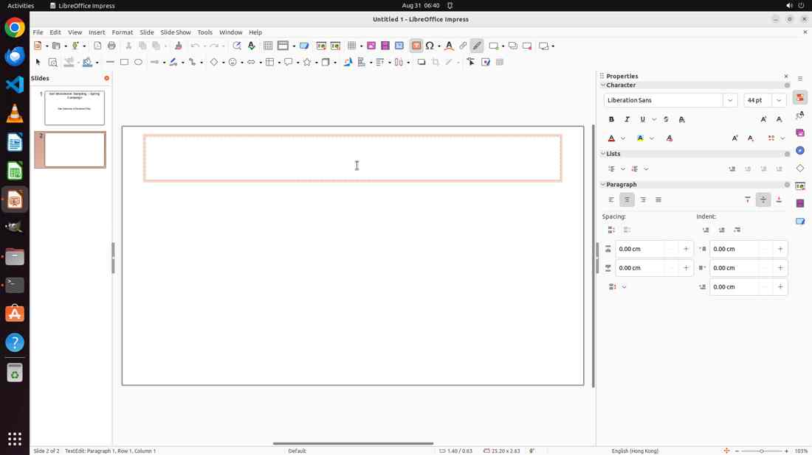
step 21 22:41:10
THINKINGIn title edit mode. Type the title. I'll type "Site Options: Weighing the Three Candidates". The colon is fine.
TOOL CALL<tool_call>
<function=computer_use>
<parameter=action>
type
</parameter>
<parameter=text>
Site Options: Weighing the Three Candidates
</parameter>
</function>
</tool_call>
EXECUTED (pyautogui in VM)pyautogui.typewrite("Site Options: Weighing the Three Candidates")
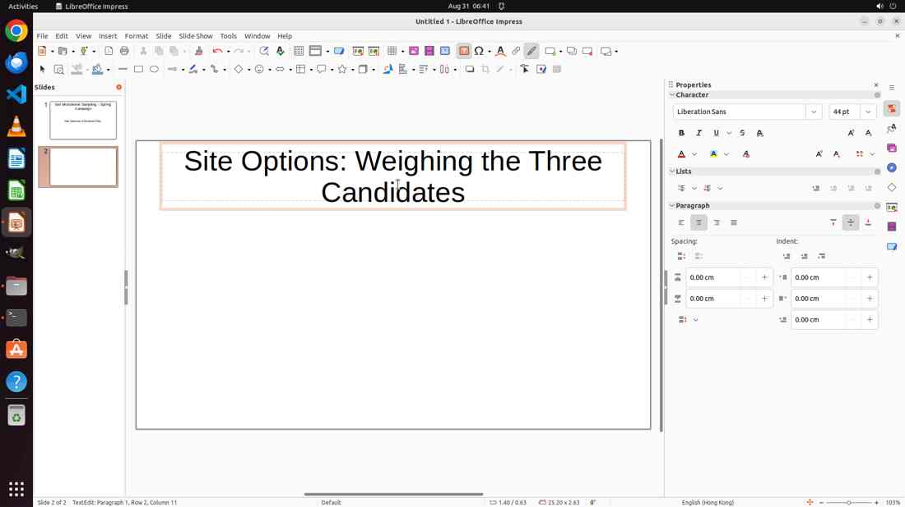
step 22 22:42:11
THINKINGTitle is set. Now I'll insert a comparison table. I'll click outside the title first to deselect, then use Insert > Table. I want 4 columns (Attribute + 3 sites) and 6 rows (header + 5 attributes: Soil, Travel, Permit, Strength, Risk).
Let me click an empty area to deselect the title, then Insert > Table.
ACTIONTitle set. Now I'll deselect and insert the comparison table (4 columns × 6 rows).
EXECUTED (pyautogui in VM)pyautogui.click(253, 174)
step 25 22:44:43
THINKINGInsert Table dialog. I need 4 columns and 6 rows. Let me set the columns field to 4 and rows to 6. I'll triple-click the columns field, type 4, then triple-click the rows field, type 6, then click OK.
ACTIONThe Insert Table dialog is open. I'll set 4 columns and 6 rows.
EXECUTED (pyautogui in VM)pyautogui.tripleClick(1035, 523)
step 26 22:45:38
THINKINGThe columns field value is selected (highlighted). I'll type 4, then set rows to 6. I'll type "4", then triple-click the rows field, type "6", then click OK. Let me batch these.
EXECUTED (pyautogui in VM)pyautogui.click(1089, 620)
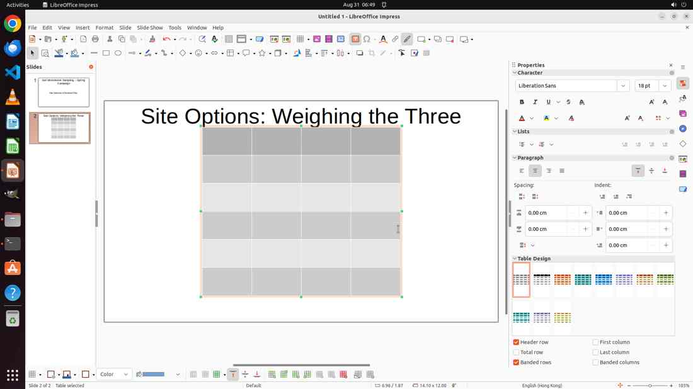
step 30 22:49:56
THINKINGThe table is created with 4 columns and 6 rows. It has a table design applied (header row styling, banded rows). The table is currently selected as an object. I need to enter edit mode to type into cells. Let me double-click the first cell to start editing.
The table spans roughly x=372 to 740, y=232 to 555. 6 rows, 4 columns. The cells:
- Row 1 (header): y~250. Cols: col1 ~417, col2 ~509, col3 ~601, col4 ~694
- Row 2: y~300
- Row 3: y~355
- Row 4: y~410 (this row looks like it's around 410-430)
- Row 5: y~460
- Row 6: y~510
Actually let me look: rows appear at y approx: 250, 300, 355, 415, 465, 510. The row heights vary a bit. Let me just double-click into the top-left cell and type, using Tab to move between cells (Tab moves to next cell, and at the end of a row moves to the first cell of the next row).
Using Tab to navigate is the most reliable. Let me double-click the first cell to enter edit mode, then type cell content and Tab between.
Cell contents in order (row by row, using Tab):
Row1: "Attribute" | "Thornbury Heath" | "Calder Ridge" | "Marsden Fen"
Row2: "Soil" | "Clay loam" | "Sandy podzol" | "Peat"
Row3: "Travel" | "40 min drive" | "2 h drive" | "25 min drive"
Row4: "Permit" | "Granted" | "Pending (Forestry Board)" | "Granted"
Row5: "Strength" | "High organic matter" | "Excellent pH gradient" | "Unique anaerobic community"
Row6: "Risk" | "Waterlogged until mid-April" | "Permit may slip" | "Only 2 usable transects"
So: type cell1, Tab, cell2, Tab, cell3, Tab, cell4, Tab (goes to row2 col1), cell5, ... etc.
I can do this all in one big type/Tab sequence. But the type action types literal text; Tab is a key. I'll interleave type and key actions in one batch.
Let me first double-click the first cell. The first cell is top-left at ~(417, 250). Let me double-click there.
ACTIONThe 4×6 table is created with a nice design. Let me enter the first cell and fill in all the content, using Tab to move between cells.
EXECUTED (pyautogui in VM)pyautogui.doubleClick(624, 372)
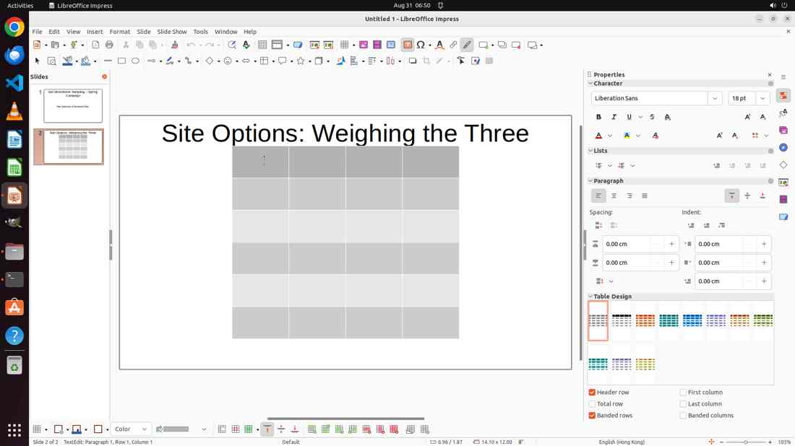
step 31 22:50:39
THINKINGI'm now in text edit mode in the first cell (status bar shows "Row 1, Column 1"). Now I'll type all the content, using Tab to move between cells. I'll batch the entire fill in one call. I need to be careful: I'll type header row first, then Tab through.
Order (Tab after each cell except the last):
1. Attribute [Tab]
2. Thornbury Heath [Tab]
3. Calder Ridge [Tab]
4. Marsden Fen [Tab]
5. Soil [Tab]
6. Clay loam [Tab]
7. Sandy podzol [Tab]
8. Peat [Tab]
9. Travel [Tab]
10. 40 min drive [Tab]
11. 2 h drive [Tab]
12. 25 min drive [Tab]
13. Permit [Tab]
14. Granted [Tab]
15. Pending (Forestry Board) [Tab]
16. Granted [Tab]
17. Strength [Tab]
18. High organic matter [Tab]
19. Excellent pH gradient [Tab]
20. Unique anaerobic community [Tab]
21. Risk [Tab]
22. Waterlogged until mid-April [Tab]
23. Permit may slip [Tab]
24. Only 2 usable transects
Let me batch this. I'll use type and key Tab alternating.
ACTIONI'm in the first cell. I'll now fill the entire table, tabbing between cells.
EXECUTED (pyautogui in VM)pyautogui.typewrite("Attribute")
step 32 22:51:14
THINKING"Attribute" typed in cell 1. Now I'll fill the rest using Tab between cells. I'll batch the full sequence: Tab then type, repeating. Let me batch the entire remaining fill in one call.
ACTIONNow I'll tab through and fill the remaining cells in one batched sequence.
THINKINGHmm, the status bar still shows "Row 1, Column 1" but that might just be stale. The Tab moved the cursor to the next cell (col 2). Let me now type the rest. I'll batch type + Tab for each remaining cell. Let me do it in one big batch: type "Thornbury Heath", Tab, "Calder Ridge", Tab, "Marsden Fen", Tab (now row2 col1), "Soil", Tab, "Clay loam", Tab, "Sandy podzol", Tab, "Peat", Tab, "Travel", Tab, "40 min drive", Tab, "2 h drive", Tab, "25 min drive", Tab, "Permit", Tab, "Granted", Tab, "Pending (Forestry Board)", Tab, "Granted", Tab, "Strength", Tab, "High organic matter", Tab, "Excellent pH gradient", Tab, "Unique anaerobic community", Tab, "Risk", Tab, "Waterlogged until mid-April", Tab, "Permit may slip", Tab, "Only 2 usable transects".
Let me batch all of it.
EXECUTED (pyautogui in VM)pyautogui.typewrite("Thornbury Heath")
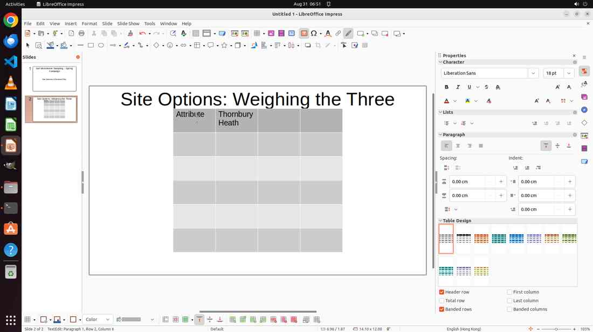
step 34 22:52:11
THINKING"Thornbury Heath" went into column 2 (the status bar row label "Row 2, Column 6" refers to text position within cell, not table cell). Good, the Tab navigation works. Now I'll batch the remaining cells. I'll alternate key Tab and type. Let me do the full remaining sequence in one batch.
ACTIONTab navigation works. Now I'll fill all remaining cells in one batched sequence.
THINKINGNow in column 3. I'll batch the rest. Let me type "Calder Ridge", Tab, "Marsden Fen", then continue through all rows. I'll batch type and key actions together in a single tool call to be efficient.
THINKINGNow in column 4 (Marsden Fen cell). I'll batch the rest. The type action and key Tab can be in one call as a sequence of actions. Let me do a big batch now.
ACTIONNow I'll fill the rest of the table in one batched sequence.
EXECUTED (pyautogui in VM)pyautogui.typewrite("Marsden Fen")
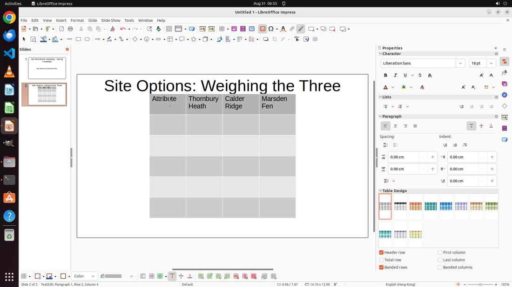
step 38 22:55:54
THINKINGHeader row complete: Attribute | Thornbury Heath | Calder Ridge | Marsden Fen. Now the Tab from the last header cell will move to row 2 col 1. I'll now fill the data rows. To be efficient and since Tab navigation is confirmed reliable, I'll batch the entire remaining content in a single tool call with alternating Tab and type actions.
Remaining (starting with Tab to move to row2 col1):
Tab, "Soil", Tab, "Clay loam", Tab, "Sandy podzol", Tab, "Peat",
Tab, "Travel", Tab, "40 min drive", Tab, "2 h drive", Tab, "25 min drive",
Tab, "Permit", Tab, "Granted", Tab, "Pending (Forestry Board)", Tab, "Granted",
Tab, "Strength", Tab, "High organic matter", Tab, "Excellent pH gradient", Tab, "Unique anaerobic community",
Tab, "Risk", Tab, "Waterlogged until mid-April", Tab, "Permit may slip", Tab, "Only 2 usable transects"
Let me batch all these as one call.
ACTIONHeader row complete. Now I'll fill all data rows in a single batch.
THINKINGNow in row 2 col 1. I'll batch the full remaining content in a single tool call, alternating type and Tab. This is the efficient move.
TOOL CALL<tool_call>
<function=computer_use>
<parameter=action>
type
</parameter>
<parameter=text>
Soil Clay loam Sandy podzol Peat Travel 40 min drive 2 h drive 25 min drive Permit Granted Pending (Forestry Board) Granted Strength High organic matter Excellent pH gradient Unique anaerobic community Risk Waterlogged until mid-April Permit may slip Only 2 usable transects
</parameter>
</function>
</tool_call>
EXECUTED (pyautogui in VM)pyautogui.typewrite("Soil\tClay loam\tSandy podzol\tPeat\tTravel\t40 min drive\t2 h drive\t25 min drive\tPermit\tGranted\tPending (Forestry Board)\tGranted\tStrength\tHigh organic matter\tExcellent pH gradient\tUnique anaerobic community\tRisk\tWaterlogged until mid-April\tPermit may slip\tOnly 2 usable transects")
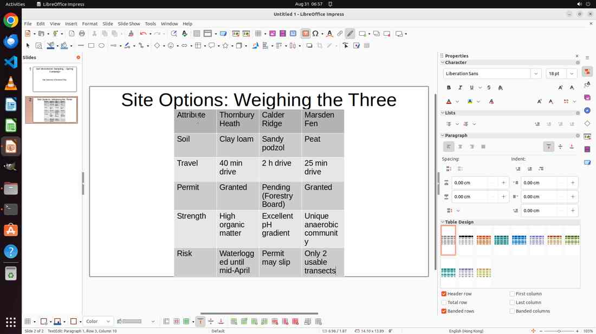
step 40 22:58:08
THINKINGThe entire table is filled correctly. The Tab characters within the type string worked as cell separators. The table now reads:
Attribute | Thornbury Heath | Calder Ridge | Marsden Fen
Soil | Clay loam | Sandy podzol | Peat
Travel | 40 min drive | 2 h drive | 25 min drive
Permit | Granted | Pending (Forestry Board) | Granted
Strength | High organic matter | Excellent pH gradient | Unique anaerobic community
Risk | Waterlogged until mid-April | Permit may slip | Only 2 usable transects
The table grew tall and slightly overflows the slide bottom (Risk row extends near/past the slide edge). I'll click outside to deselect and check. The table's bottom appears to go to ~y=595 which is within the slide (slide bottom ~648). It fits, though tightly. Good enough.
Now I need to create Slide 3 (Fieldwork Plan, week by week) and Slide 4 (Budget & Contacts). Let me click outside the table first to deselect, then add a new slide.
Let me click an empty area (e.g., left side of slide, but the table covers most). Let me click at (250, 600) which is left of the table, or click in the slide panel. Actually clicking empty canvas area outside the table: the table spans x 372-740. Left area x=250 is empty. Let me click there to deselect. Then Escape to be safe.
ACTIONThe comparison table is complete and reads correctly. Now let me create the Fieldwork Plan slide. First I'll click outside to deselect, then add a new slide.
EXECUTED (pyautogui in VM)pyautogui.click(374, 928)
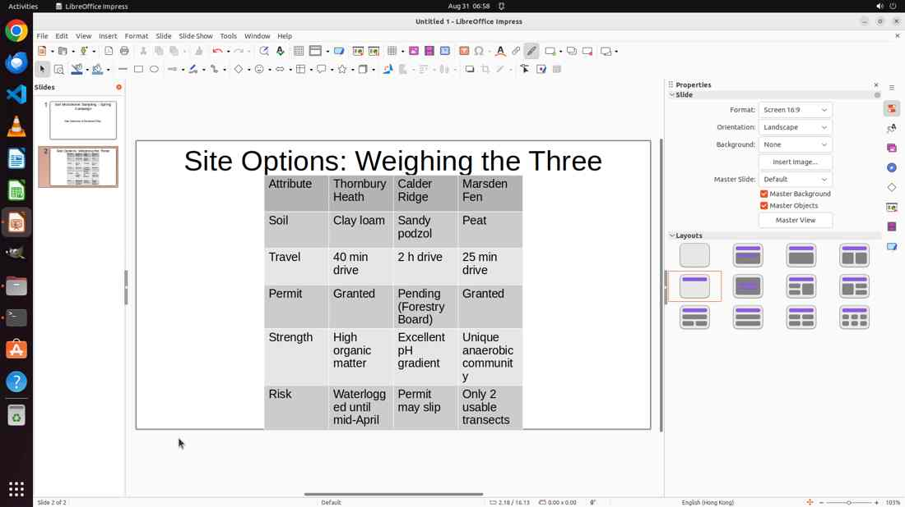
step 41 22:58:54
THINKINGTable looks good and fits the slide. Now I'll create slide 3. Let me use Slide menu > New Slide, then set layout to "Title, Content" for a bulleted list, then fill title and content.
Let me open the Slide menu.
ACTIONThe table slide looks good. Now let me add the Fieldwork Plan slide via the Slide menu.
EXECUTED (pyautogui in VM)pyautogui.click(345, 75)
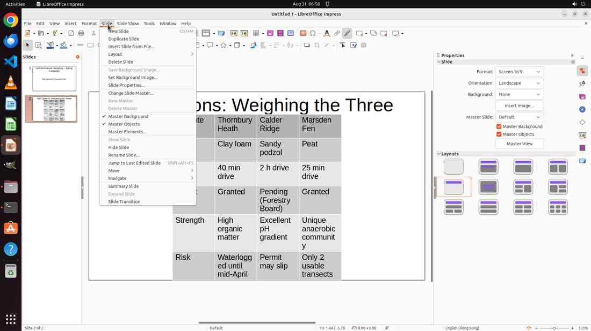
step 42 23:00:27
THINKINGI'll click "New Slide". It should insert after the current slide (slide 2) and use a default layout (likely "Title Only" since that was last used, or the standard "Title, Content"). I'll set the layout explicitly afterward. Let me click New Slide.
EXECUTED (pyautogui in VM)pyautogui.click(384, 100)
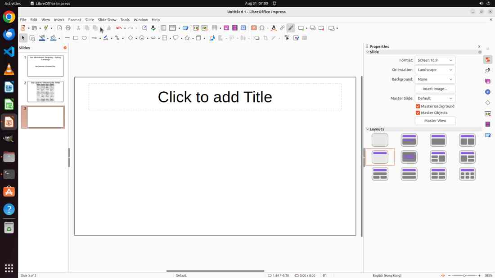
step 43 23:01:30
THINKINGSlide 3 created with "Title Only" layout. I need a "Title, Content" layout for a bulleted list. The second layout in row 1 (at ~1055, 363) is "Title, Content" (title bar + content box). Let me select it.
ACTIONSlide 3 created. I'll apply the "Title, Content" layout (top row, second one) for the bulleted week list.
EXECUTED (pyautogui in VM)pyautogui.click(1581, 542)
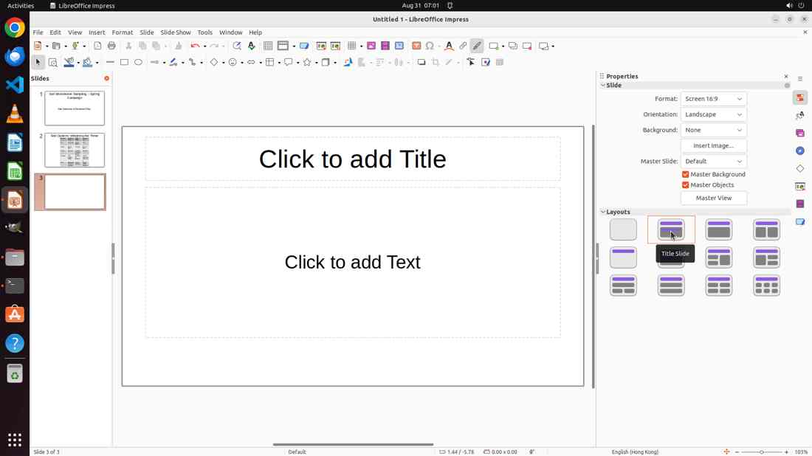
step 44 23:02:43
THINKING"Title, Content" layout applied. Now let me add the title and content. Double-click the title, type "Fieldwork Plan: Week by Week". Then double-click the content area, type the 6 weeks as bullets.
For the weeks, I'll present each week with a bold-ish lead. I'll use bullet lines:
Week 1: Finalise site selection; order sterile corers and cool boxes
Week 2: Pilot sampling — 6 cores per transect; record GPS and soil temp
Week 3: Full sampling across all transects; ship on dry ice
Week 4: DNA extraction — 96-well plates (Qiagen kit)
Week 5: 16S V4 library prep and submit to sequencing core
Week 6: Bioinformatics — DADA2 pipeline; draft results for group
Let me type the title first.
ACTIONLayout set. Let me add the title for the fieldwork slide.
EXECUTED (pyautogui in VM)pyautogui.doubleClick(830, 377)
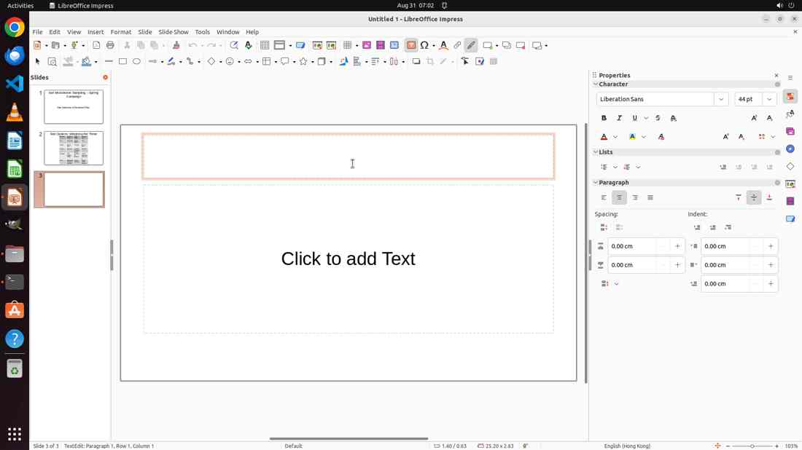
step 45 23:03:48
THINKINGIn title edit mode. Type the title, then click the content area and type the weeks. I'll type title, then Tab? Tab in title box may move to next placeholder. Actually safer to click the content placeholder directly. Let me type the title first.
TOOL CALL<tool_call>
<function=computer_use>
<parameter=action>
type
</parameter>
<parameter=text>
Fieldwork Plan: Week by Week
</parameter>
</function>
</tool_call>
EXECUTED (pyautogui in VM)pyautogui.typewrite("Fieldwork Plan: Week by Week")
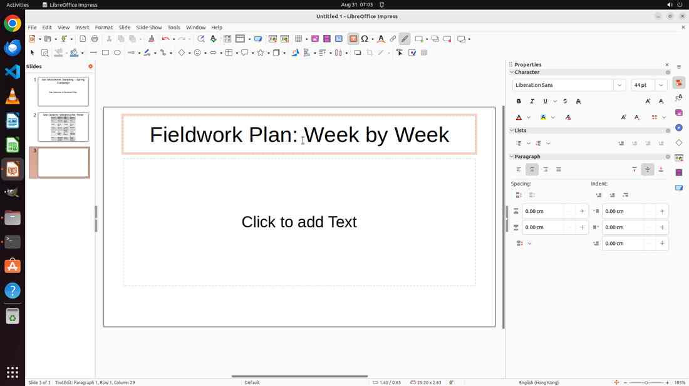
step 46 23:04:58
THINKINGTitle set. Now click the content placeholder and type the six weeks. I'll double-click on "Click to add Text" to enter edit mode, then type the weeks separated by newlines (each becomes a bullet). I'll use en-dashes? The autocorrect turns single hyphen between words sometimes into en-dash. To keep it clean and avoid surprises, I'll use ": " and "; " as separators. Let me write:
Week 1: Finalise site selection; order sterile corers and cool boxes
Week 2: Pilot sampling - 6 cores per transect; record GPS and soil temp
Week 3: Full sampling across all transects; ship on dry ice
Week 4: DNA extraction - 96-well plates (Qiagen kit)
Week 5: 16S V4 library prep; submit to sequencing core
Week 6: Bioinformatics - DADA2 pipeline; draft results for group
Let me double-click the content area first.
ACTIONTitle set. Now I'll enter the week-by-week fieldwork into the content box.
EXECUTED (pyautogui in VM)pyautogui.doubleClick(749, 617)
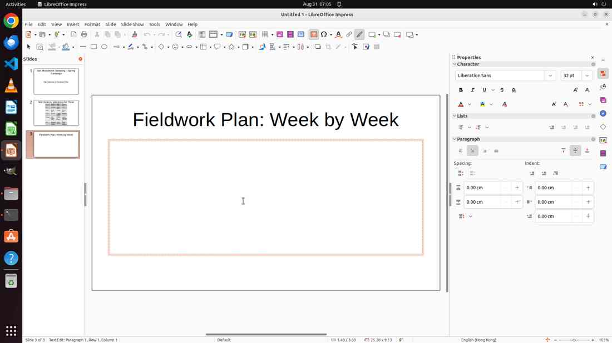
step 47 23:05:47
THINKINGI'm in the content text box. Now I'll type the six weeks, each on its own line. I'll use newlines between them. The font is 32pt which may be large; 6 lines should fit. Let me type them. I'll use ": " and "; " as separators and avoid hyphens to prevent en-dash autocorrect ambiguity, using " - " only where I want a dash. Actually a plain " - " with spaces will not convert to en-dash (autocorrect en-dash triggers on "word - word" with spaces sometimes). To be safe I'll avoid dashes entirely and use commas/semicolons.
Let me type the content.
ACTIONI'm in the content box. I'll type the six weeks in order, one per line.
TOOL CALL<tool_call>
<function=computer_use>
<parameter=action>
type
</parameter>
<parameter=text>
Week 1: Finalise site selection; order sterile corers and cool boxes
Week 2: Pilot sampling, 6 cores per transect; record GPS and soil temp
Week 3: Full sampling across all transects; ship samples on dry ice
Week 4: DNA extraction, 96-well plates (Qiagen kit)
Week 5: 16S V4 library prep; submit to sequencing core
Week 6: Bioinformatics, DADA2 pipeline; draft results for the group
</parameter>
</function>
</tool_call>
EXECUTED (pyautogui in VM)pyautogui.typewrite("Week 1: Finalise site selection; order sterile corers and cool boxes\nWeek 2: Pilot sampling, 6 cores per transect; record GPS and soil temp\nWeek 3: Full sampling across all transects; ship samples on dry ice\nWeek 4: DNA extraction, 96-well plates (Qiagen kit)\nWeek 5: 16S V4 library prep; submit to sequencing core\nWeek 6: Bioinformatics, DADA2 pipeline; draft results for the group")
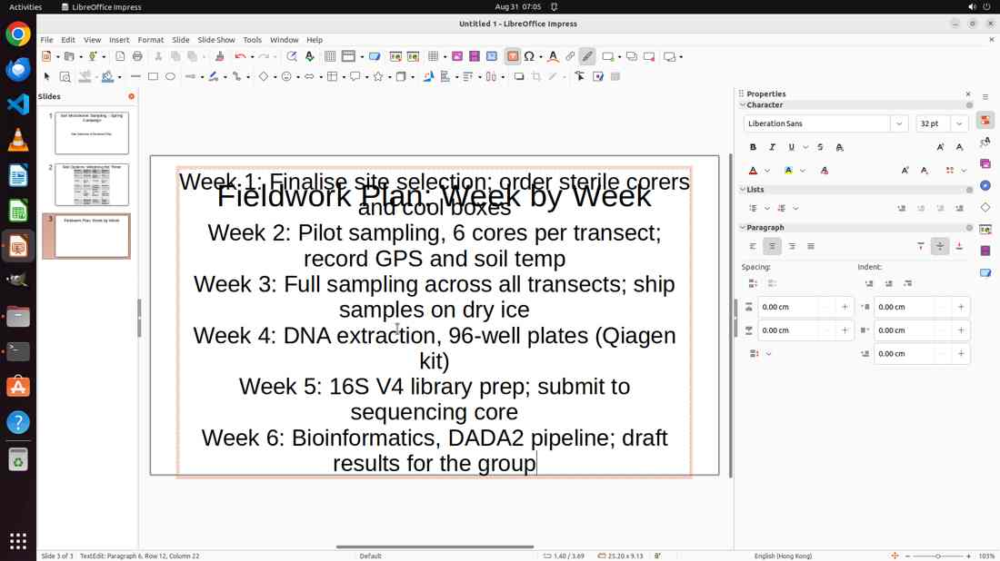
step 48 23:06:23
THINKINGThe text is there but at 32pt it's overflowing the content box and overlapping the title at the top (Week 1 line is up near the title, text is centered and wrapping to two lines each). The content is too large. I should reduce the font size so all 6 weeks fit neatly. Let me select all the content text and reduce font size to ~20pt.
I'll click in the content box, select all (Ctrl+A selects all text in the current text box while in edit mode), then set font size to 20. Let me first click in the content text to ensure focus is in the box (it is, cursor at Row 12). Ctrl+A, then set font size in the properties panel.
Actually Ctrl+A in a text-editing frame selects all text in that frame. Let me do Ctrl+A then type 20 in the font size field. The font size field is at top right (~1200, 158). I'll click it, clear, type 20, Enter.
Let me select all first.
ACTIONThe text is there but too large (32pt) and overflowing. Let me select all the content text and reduce the font size to fit.
EXECUTED (pyautogui in VM)pyautogui.hotkey("ctrl", "a")
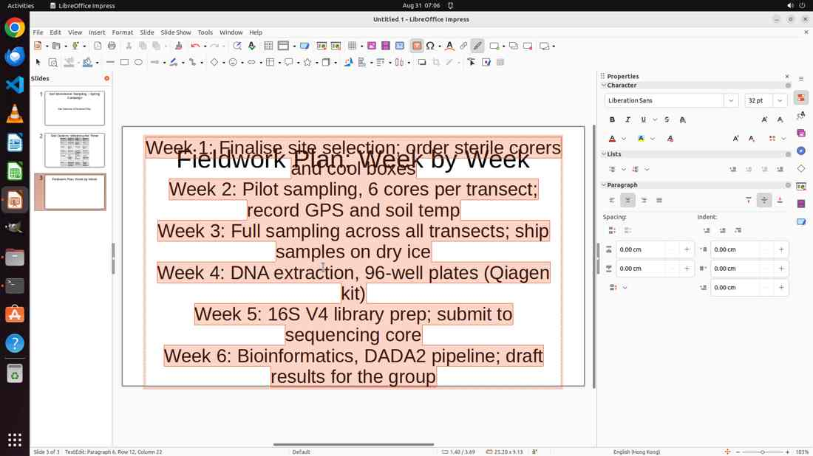
step 49 23:06:59
THINKINGAll content text is selected (highlighted). Now set the font size to 20. I'll triple-click the font size field to select its value, type 20, and press Enter.
ACTIONAll content is selected. Let me set the font size to 20pt so it fits.
EXECUTED (pyautogui in VM)pyautogui.tripleClick(1798, 235)
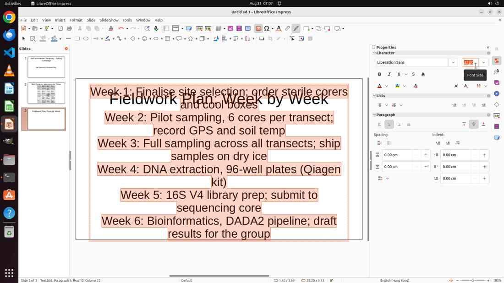
step 50 23:07:39
THINKINGThe font size field "32 pt" is selected (highlighted). The text selection in the slide is still active (highlighted). Now type 20 and press Enter.